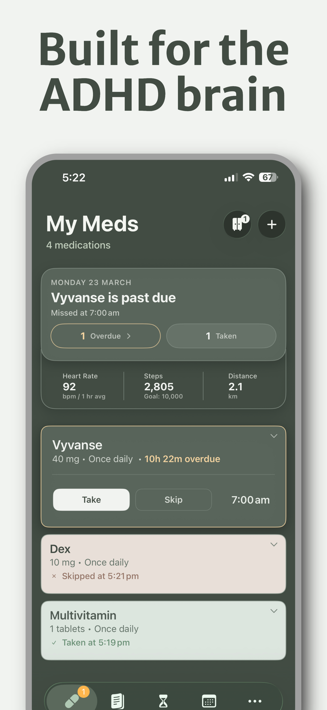
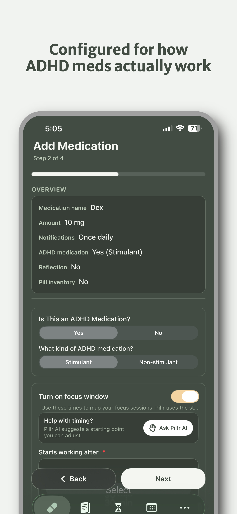
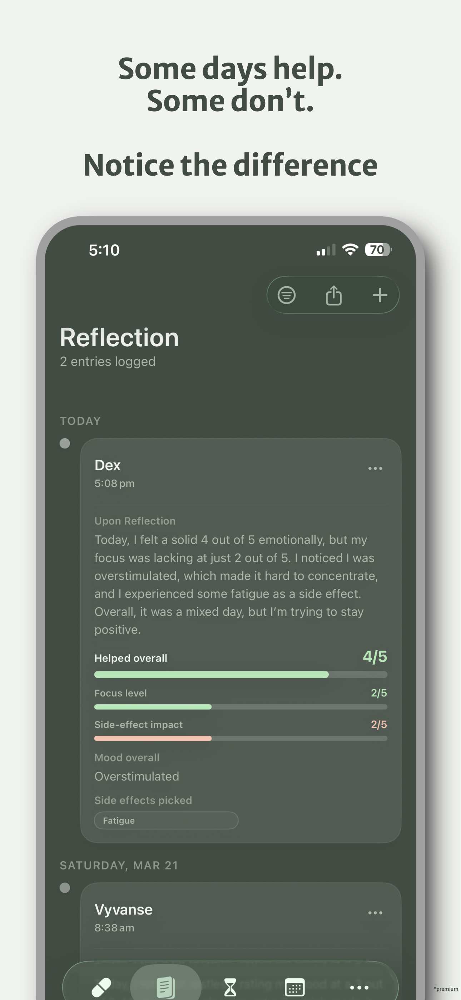
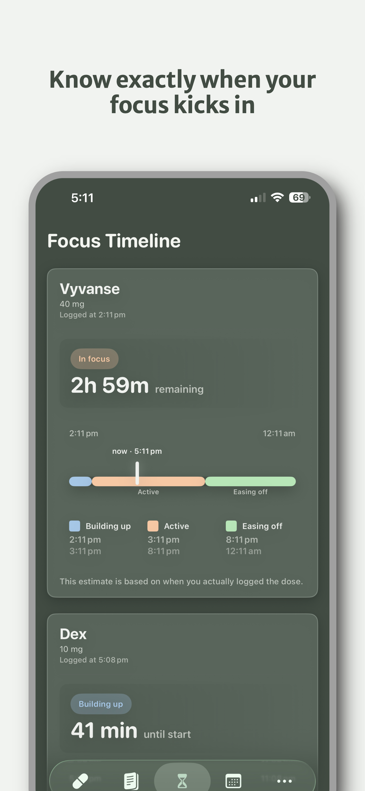
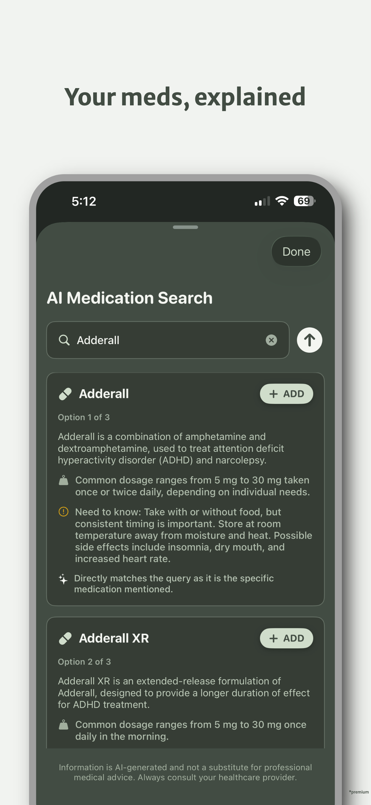
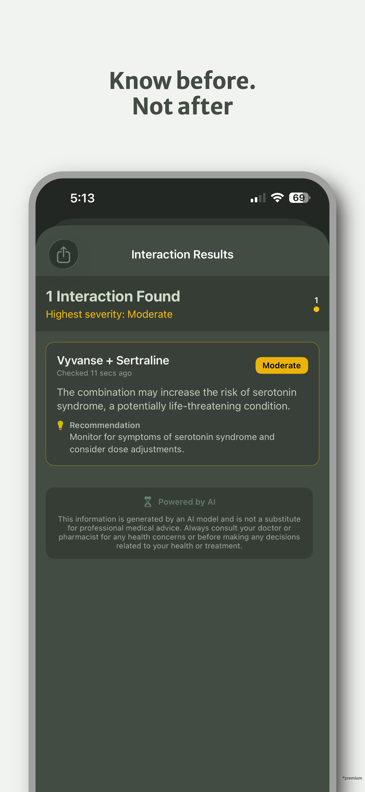
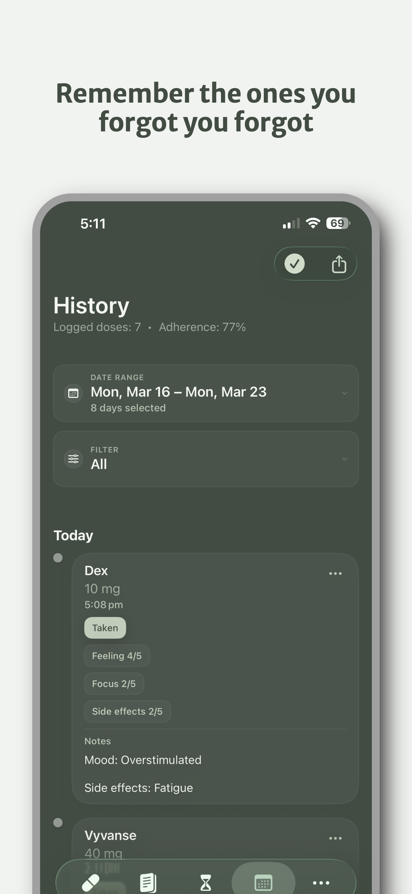

My Meds + Cabinet
Keep reminders and as-needed meds organized in one place.







Pillr turns medication management into one clear daily flow. Track scheduled and as-needed meds, log taken or skipped doses, map stimulant focus windows, and keep Reflection notes you can export for check-ins. Your data stays on device by default, with optional iCloud sync.
My Meds + Cabinet
Keep reminders and as-needed meds organized in one place.
Focus timeline
Track stimulant onset, peak, and wear-off.
Reflection + exports
Capture mood, focus, and side effects over time.
How it works
Set it once, then let Pillr keep you in sync with your doses, reminders, and logs.
Set scheduled or as-needed meds with reminder times, dosage details, and optional focus timing.
Stay on track with reminder alerts, overdue indicators, and quick log/skip actions.
Use History and Reflection views to review adherence, focus patterns, and export reports.
Feature 1
Keep scheduled medications and as-needed meds organized in one calm view. When it is time to act, you can log, skip, or come back later without wondering what happened.
Reminder timeline
Feature 2
Pillr helps you see more than whether you took a dose. Track when medication starts working, when it fades, and how your day felt so patterns become easier to notice over time.
Focus window
Feature 3
Keep your routine stable without extra mental load. Pillr helps you see your history, avoid running out, and keep your information on your device unless you choose otherwise.
History and supply snapshot
Benefits
Pillr is built to reduce the mental overhead of medication management.
Reliable medication reminders and in-app logging mean fewer gaps in your routine.
My Meds and Cabinet keep scheduled and as-needed medications easy to manage.
Stimulant timing and focus timelines help you plan deep work and downtime.
History and Reflection exports make clinical conversations clearer and faster.
Guides
These pages are written in plain language for people trying to understand ADHD, treatment, and medication routines without the overwhelm.
A simple look at the signs adults often notice first and what to do next.
Read guideHow ADHD often shows up in daily life, from routines and timing to overwhelm.
Read guideWhat the assessment process often looks like and how to prepare for it.
Read guideA plain-language overview of medication, therapy, coaching, and support systems.
Read guideA daily guide to reminders, logging, missed doses, notes, and refill planning.
Read guideFAQ
A few quick answers here, with the full list on a separate page.
No. Pillr helps you track and organize medications, but it does not replace a clinician.
Yes. Pillr supports any medications, with special timing tools for ADHD stimulants.
Your data stays on device by default, with optional iCloud sync across Apple devices.
You can export medication history as CSV or PDF for easy sharing.
Yes, Pillr combines pill tracker features with flexible reminders so you always know when to take, skip, or snooze a dose.
Pillr tracks adherence rates, streaks, and refill status, making it easy to share proof of consistency with clinicians or caregivers.
Get started
Download Pillr to manage reminders, log doses, track focus windows, and keep Reflection history in one app.